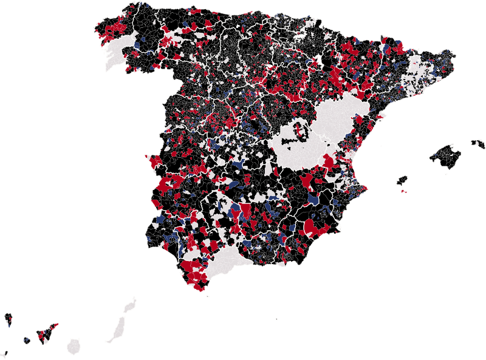

<title>De 1933 a 1936</title>
<link rel="stylesheet" href="https://fonts.googleapis.com/css2?family=Literata:opsz,wght@7..72,400;7..72,600;7..72,800&family=Barlow+Semi+Condensed:wght@400;500;600&display=swap">
<style>
/* Layout: una columna de lectura de ~65ch; los gráficos se abren algo más anchos */
:root{
  --bg:#fbfaf8; --fg:#1d1a1c; --muted:#5d585b; --rule:#e2dddf; --grid:#ebe7e8;
  --comuns:#a2275f; --muni:#1b8fa8; --other:#d9d4d6; --tipbg:#1d1a1c; --tipfg:#fbfaf8;
  --serif:"Literata",Georgia,"Times New Roman",serif;
  --ui:"Barlow Semi Condensed","Arial Narrow",Arial,sans-serif;
}
@media (prefers-color-scheme: dark){:root:not([data-theme="light"]){
  --bg:#18161a; --fg:#f1edef; --muted:#b5aeb2; --rule:#343036; --grid:#2c282e;
  --comuns:#d0679a; --muni:#2a9ab4; --other:#3e393f; --tipbg:#f1edef; --tipfg:#18161a; color-scheme:dark}}
:root[data-theme="dark"]{
  --bg:#18161a; --fg:#f1edef; --muted:#b5aeb2; --rule:#343036; --grid:#2c282e;
  --comuns:#d0679a; --muni:#2a9ab4; --other:#3e393f; --tipbg:#f1edef; --tipfg:#18161a; color-scheme:dark}
body{background:var(--bg);color:var(--fg);font-family:var(--serif);font-size:18px;line-height:1.62}
main{max-width:46rem;margin:0 auto;padding-block:2.5rem 4rem;padding-inline:16px}
.draft{font-family:var(--ui);font-size:.85rem;letter-spacing:.06em;text-transform:uppercase;color:var(--muted);border:1px solid var(--rule);display:inline-block;padding:.15rem .5rem;border-radius:3px}
h1{font-size:clamp(1.8rem,5vw,2.6rem);line-height:1.12;font-weight:800;text-wrap:balance;margin:.8rem 0 .9rem}
.dek{font-size:1.15rem;line-height:1.5;color:var(--muted);margin:0 0 1rem}
.byline{font-family:var(--ui);font-size:.95rem;color:var(--muted);border-top:1px solid var(--rule);padding-top:.6rem}
h2{font-size:1.35rem;line-height:1.25;margin:2.4rem 0 .6rem;text-wrap:balance}
p{margin:0 0 1rem}
ul{padding-left:1.2rem;margin:0 0 1rem} li{margin-bottom:.35rem}
figure{margin:1.8rem 0 2rem;font-family:var(--ui)}
figcaption .t{font-weight:600;font-size:1.1rem;display:block;line-height:1.25}
figcaption .s{color:var(--muted);font-size:.98rem;display:block;margin-top:.15rem}
.src{color:var(--muted);font-size:.85rem;margin-top:.4rem}
.chart{position:relative;margin-top:.7rem}
svg{display:block;width:100%;height:auto;overflow:visible}
svg text{font-family:var(--ui);fill:var(--muted);font-size:13px}
svg .lab{fill:var(--fg);font-weight:600}
.legend{display:flex;flex-wrap:wrap;gap:.4rem 1.1rem;font-size:.95rem;color:var(--fg);margin-top:.4rem}
.legend span{display:inline-flex;align-items:center;gap:.4rem}
.sw{width:14px;height:14px;border-radius:3px;display:inline-block}
.maps{display:grid;grid-template-columns:1fr 1fr;gap:12px}
.maps h3{font-family:var(--ui);font-size:1rem;margin:0 0 .3rem;font-weight:600}
.maps h3 b{color:var(--comuns)}
.tip{position:absolute;pointer-events:none;background:var(--tipbg);color:var(--tipfg);font-family:var(--ui);font-size:.9rem;line-height:1.3;padding:.35rem .55rem;border-radius:4px;white-space:nowrap;z-index:5;transform:translate(-50%,-115%)}
.tbl{overflow-x:auto} table{border-collapse:collapse;font-family:var(--ui);font-size:.98rem;width:100%;font-variant-numeric:tabular-nums}
th,td{text-align:left;padding:.3rem .5rem;border-bottom:1px solid var(--rule)} td.n,th.n{text-align:right}
details{font-family:var(--ui);margin-top:.5rem} summary{cursor:pointer;color:var(--muted)}
a{color:var(--comuns)} a:focus-visible,summary:focus-visible{outline:2px solid var(--comuns);outline-offset:2px}
.foot{font-family:var(--ui);font-size:.95rem;color:var(--muted);border-top:1px solid var(--rule);margin-top:2.5rem;padding-top:.8rem}
@media (max-width:520px){body{font-size:17px}.maps{gap:8px}}
</style>
<style>:root{--pp:#1d84ce;--psoe:#e30613;--vox:#5ac035;--fp:#b3001b;--der:#24366b;--sumar:#a2275f;--neu:#1d7f95}@media (prefers-color-scheme: dark){:root:not([data-theme="light"]){--pp:#4fa8ea;--psoe:#ff5a5f;--vox:#74d651;--fp:#ff6b70;--der:#7d8fc9;--sumar:#d0679a;--neu:#3aa6bf}}:root[data-theme="dark"]{--pp:#4fa8ea;--psoe:#ff5a5f;--vox:#74d651;--fp:#ff6b70;--der:#7d8fc9;--sumar:#d0679a;--neu:#3aa6bf}</style>
<style>.caja{border-left:3px solid var(--rule);background:color-mix(in srgb,var(--fg) 4%,transparent);padding:.8em 1em;margin:1.4em 0;border-radius:0 4px 4px 0}.caja p{margin:0}</style>

<style>.mapa svg path.p{fill:var(--other);stroke:var(--bg);stroke-width:.6}.mapa circle{stroke:var(--bg);stroke-width:.6;fill-opacity:.85}.mini{display:grid;grid-template-columns:repeat(2,1fr);gap:10px 16px}.mini h3{font-family:var(--ui);font-size:1rem;margin:0;font-weight:600}@media (max-width:520px){.mini{grid-template-columns:1fr}}</style>
<style>.mapa-img{width:100%;height:auto;display:block}.sw.dd{background:color-mix(in srgb,var(--der) 32%,var(--bg))}.sw.ii{background:color-mix(in srgb,var(--fp) 32%,var(--bg))}.sw.di{background:var(--psoe)}.sw.id{background:var(--pp)}.cita{border-left:3px solid var(--fp);padding:.2em 0 .2em 1em;margin:1.4em 0;font-size:1.08rem}</style>
<style>.mapa-img{width:100%;height:auto;display:block}.cita{border-left:3px solid var(--fp);padding:.2em 0 .2em 1em;margin:1.4em 0;font-size:1.08rem}.sw.dd{background:color-mix(in srgb,var(--der) 32%,var(--bg))}.sw.ii{background:color-mix(in srgb,var(--fp) 32%,var(--bg))}.sw.di{background:var(--fp)}.sw.id{background:var(--der)}</style>
<main>
<span class="draft">Borrador para revisión · no publicado</span>
<h1>Las mujeres votaron por primera vez en 1933 y ganaron las derechas; en 1936 volvieron a votar y 888 pueblos se pasaron al Frente Popular</h1>
<p class="dek">A las españolas se les echó la culpa de la derrota de la izquierda en 1933. Dos años y tres meses después, con las mismas votantes, ganó el Frente Popular. Lo que cambió entre una elección y otra, pueblo a pueblo.</p>
<div class="byline">Nacho G. del Álamo · 23 de octubre de 2026</div>
<p data-tipo="contexto" style="margin-top:1.4rem">Es el 5 de noviembre de 1933, en las escuelas del ayuntamiento de Éibar. Detrás de una urna de cristal, de pie, está la presidenta de la mesa, Pastora Medina Corta. Recoge la papeleta que le tiende una mujer mayor con un pañuelo blanco en la cabeza. Detrás esperan otras dos, de negro, y un hombre con boina y paraguas. Son vecinos de los caseríos de los alrededores: Josefa Gervasia Aguirrebengoa, Josefa Suinaga, María Josefa Acha Belaustegui e Isidoro Arano. Se vota el Estatuto vasco, y es una de las primeras veces que votan las mujeres en España. El fotógrafo Indalecio Ojanguren estaba allí.</p>
<p data-tipo="contexto">Catorce días después, el 19 de noviembre, votaron todas las españolas mayores de 23 años en las primeras elecciones generales con sufragio femenino. Las había hecho posibles la Constitución de 1931, tras un debate en el que Clara Campoamor dijo en las Cortes: «Dejad que la mujer se manifieste y veréis como ese poder no podéis seguir detentándolo» (<a href="https://www.marxists.org/espanol/tematica/mujer/autores/campoamor/1931/oct01.htm">discurso del 1 de octubre de 1931</a>). Ganaron las derechas. Y a las mujeres, y a Campoamor, les echaron la culpa: ella <a href="https://es.wikipedia.org/wiki/Clara_Campoamor">no volvió a ser diputada</a>.</p>
<h2>Las mismas votantes, otro resultado</h2>
<p data-tipo="dato">El <a href="https://doi.org/10.34810/data3274">Atlas Electoral de la Segunda República</a> de la Universitat Pompeu Fabra, ya en <a href="https://mapaelectoral.es/">nuestro mapa</a>, permite comparar pueblo a pueblo aquel noviembre de 1933 con el febrero de 1936. En los 6.690 municipios actuales con datos de las dos elecciones, hemos sumado en 1933 los votos al PSOE, a los comunistas, a ERC y a los republicanos de izquierda, y los hemos comparado con los de las derechas y la Lliga. En 1936, el Frente Popular frente a las derechas. En 5.108 municipios ganaron las derechas en 1933. En 888 de ellos, en 1936 ganó el Frente Popular. El camino contrario lo hicieron 393.</p>
<figure>
<figcaption><span class="t">De 1933 a 1936, municipio a municipio</span><span class="s">Bloque que sumó más votos en las generales de noviembre de 1933 (izquierdas o derechas) y en las de febrero de 1936 (Frente Popular o derechas). En color intenso, los municipios que cambiaron de bloque</span></figcaption>
<div class="chart"></div>
<div class="legend"><span><i class="sw di"></i>De las derechas al Frente Popular (888)</span><span><i class="sw id"></i>De las izquierdas a las derechas (393)</span><span><i class="sw dd"></i>Derechas en las dos (4.220)</span><span><i class="sw ii"></i>Izquierdas en las dos (1.189)</span></div>
<div class="src">Fuente: Rodon, Vall-Prat y Martín Álvarez, Atlas Electoral de la Segunda República (UPF, CC BY-NC-SA 4.0); primera vuelta de 1933 y de 1936. Gris: sin datos de alguna de las dos. Canarias, desplazada. Cálculo propio.</div>
</figure>
<p data-tipo="dato">Ponderando por el censo, de cada 100 votos a la izquierda y a la derecha en esos municipios, 41 fueron a la izquierda en 1933 y 48 al Frente Popular en 1936. Donde se conoce la participación de las dos elecciones (3.162 municipios), pasó del 69,8% al 73,5%, y subió en 61 de cada 100.</p>
<p data-tipo="dato">Los cambios hacia la izquierda se concentran en el interior. Ávila tuvo 64 municipios que pasaron de las derechas al Frente Popular, de 246 con datos; Soria, 57; Burgos, 55; Zaragoza, 54, y Huesca, 53. En 12 provincias hubo más cambios hacia la derecha que hacia la izquierda, entre ellas Madrid, Granada, Girona, Tarragona y Bizkaia. En Granada, 24 municipios se fueron a la derecha y 17 a la izquierda.</p>
<h2>Las ciudades, del centro al Frente Popular</h2>
<p data-tipo="dato">En las ciudades el cambio fue mayor. En Sevilla, la izquierda sumó el 23,8% en 1933 y el Frente Popular, el 63,5% en 1936. En Cádiz, del 20,9% al 60,9%. En A Coruña, del 29,1% al 71,6%. En València, donde en 1933 el centro (los republicanos de Lerroux y el blasquismo) se llevó el 44,8%, el Frente Popular llegó en 1936 al 52,6%.</p>
<figure>
<figcaption><span class="t">Las grandes ciudades, de 1933 a 1936</span><span class="s">Voto a la izquierda en noviembre de 1933 (PSOE, comunistas, ERC y republicanos de izquierda) y al Frente Popular en febrero de 1936. Ordenadas por el cambio</span></figcaption>
<div class="chart" id="ciu"></div>
<div class="legend"><span><i class="sw" style="background:var(--bg);border:2px solid var(--fp);border-radius:50%;box-sizing:border-box"></i>Izquierda, 1933</span><span><i class="sw" style="background:var(--fp);border-radius:50%"></i>Frente Popular, 1936</span></div>
<div class="src">Fuente: Atlas Electoral de la Segunda República (UPF). Porcentaje sobre los votos a candidatos. Sin datos de las dos elecciones en Barcelona y otras capitales. Cálculo propio.</div>
</figure>
<p data-tipo="patron">Las votantes eran las mismas. Lo que cambió fue la oferta. En 1933 la izquierda se presentó dividida y el centro republicano fue fuerte en muchas ciudades; en 1936, la izquierda se unió en el Frente Popular y el centro casi desapareció. Con listas abiertas y una ley que premiaba a la candidatura más votada en cada provincia, ir juntos o separados pesaba mucho. Los datos no permiten decir qué hizo cada votante: solo cómo cambió el resultado de cada pueblo.</p>
<h2>«La mejor lejía»</h2>
<p data-tipo="contexto">El politólogo Jordi Muñoz (Universitat de Barcelona) ha estudiado aquellas elecciones con datos de participación por sexo. «Nuestros estudios muestran que la participación de las mujeres no causó este giro a la derecha», dijo al <a href="https://es.ara.cat/cultura/falsos-topicos-sufragio-femenino-espana_130_4134771.html">Ara</a>. «Participaron menos que los hombres, unos 12 puntos». Y añadió: «Quizás en un momento inicial eran más conservadoras, pero esto se revierte».</p>
<p data-tipo="contexto">El historiador Julián Casanova lo resume con un argumento sencillo, recogido en la <a href="https://es.wikipedia.org/wiki/Elecciones_generales_de_Espa%C3%B1a_de_1933">Wikipedia</a>: «Las mujeres votaron también en 1936, y muchas de ellas a la CEDA». Y, aun así, ganó el Frente Popular.</p>
<p data-tipo="contexto">Campoamor lo escribió antes, en mayo de 1936, en <i>El voto femenino y yo. Mi pecado mortal</i>: «La causa fundamental de la derrota de las izquierdas y el triunfo de las derechas fue que las primeras estaban desunidas». Y, sobre las mujeres: «El voto femenino, a partir de 1933, fue la mejor lejía para lavar las torpezas políticas masculinas» (citado por el <a href="https://es.ara.cat/cultura/falsos-topicos-sufragio-femenino-espana_130_4134771.html">Ara</a>).</p>
<p class="cita">«El voto femenino, a partir de 1933, fue la mejor lejía para lavar las torpezas políticas masculinas.»<br><small>Clara Campoamor, <i>El voto femenino y yo. Mi pecado mortal</i>, 1936</small></p>
<h2>Lo que estos datos no dicen</h2>
<p data-tipo="contexto">El Atlas no separa el voto por sexo: los resultados de cada municipio son de hombres y mujeres juntos, y no dicen a quién votaron ellas. Las coaliciones de 1933 y de 1936 no son las mismas: en 1933 sumamos candidaturas que fueron por separado, y dejamos fuera al centro. En 1933 hubo segunda vuelta en algunas provincias; aquí usamos la primera. Los resultados de febrero de 1936 en Granada y Cuenca se anularon y se repitieron en mayo. Y en 1933 «la CNT desplegó una campaña sin precedentes a favor de la abstención», que según el historiador Julián Casanova «se notó especialmente en ciudades como Sevilla, Barcelona, Cádiz o Zaragoza», aunque él no la considera decisiva (<a href="https://es.wikipedia.org/wiki/Elecciones_generales_de_Espa%C3%B1a_de_1933">Wikipedia</a>). Eso también pesa en el salto de esas ciudades.</p>
<p data-tipo="contexto">En la foto de Éibar, la presidenta de la mesa alarga la mano hacia la papeleta. Las mujeres de los caseríos esperan su turno. No sabemos qué votaron. Dos años y tres meses después volvieron a hacer cola, y las urnas dieron la vuelta.</p>
<p><a href="https://mapaelectoral.es/">Mira 1933 y 1936 en tu municipio, en el mapa</a> · Más: <a href="https://mapaelectoral.es/actualidad/republica-mapa-1936-hoy/">El mapa de 1936 apenas se parece al de hoy</a> · <a href="https://mapaelectoral.es/actualidad/girona-1936-participacio/">El 1936 Salt votava més que avui</a></p>
<div class="foot">Datos: Toni Rodon, Pau Vall-Prat y Diego Martín Álvarez, Electoral Atlas of the Spanish Second Republic (1931-1936), Universitat Pompeu Fabra, DOI 10.34810/data3274, licencia CC BY-NC-SA 4.0. Cálculo propio: 6.690 municipios actuales con datos de las dos elecciones, sin empates; los municipios desaparecidos se suman al actual en que se integraron.</div>
</main>
<script>
const D={"ciu":[["A Coruña",29.1,40.8,26.1,71.6,27.1],["Cádiz",20.9,59.2,19.7,60.9,38.5],["Sevilla",23.8,46.0,30.1,63.5,36.0],["Jerez de la Frontera",19.2,63.5,17.4,57.9,41.8],["Zaragoza",20.2,53.4,26.4,53.0,45.6],["València",20.1,35.1,44.8,52.6,38.1],["Gijón",33.3,51.1,15.6,63.8,35.7],["Cartagena",45.2,28.7,26.0,62.4,37.5],["Córdoba",53.1,31.6,15.2,68.6,30.1],["Palma",29.0,60.3,10.7,43.9,56.1],["Madrid",45.0,35.9,19.1,55.9,43.8],["Santander",43.6,44.9,11.6,53.6,43.2],["Bilbao",37.6,17.1,0.4,44.3,23.0],["Valladolid",46.3,44.0,9.6,52.4,43.3],["Oviedo",54.8,38.0,7.3,59.9,39.9],["Murcia",57.5,26.2,15.4,59.7,34.1]]};
const NS='http://www.w3.org/2000/svg';
function el(n,a,p){const e=document.createElementNS(NS,n);for(const k in a)e.setAttribute(k,a[k]);if(p)p.appendChild(e);return e}
function tipFor(box){let t=document.createElement('div');t.className='tip';t.hidden=true;box.appendChild(t);
  return {show(html,x,y){t.innerHTML=html;t.hidden=false;const bw=box.clientWidth,tw=t.offsetWidth;const cx=Math.min(Math.max(x,tw/2),bw-tw/2);t.style.left=cx+'px';t.style.top=y+'px'},hide(){t.hidden=true}}}
function pos(box,ev){const r=box.getBoundingClientRect();const p=ev.touches?ev.touches[0]:ev;return [p.clientX-r.left,p.clientY-r.top]}
const c1=v=>v.toFixed(1).replace('.',',');
function hov(box,tip,hit,html){const h=ev=>{const [a,b]=pos(box,ev);tip.show(html,a,b)};hit.addEventListener('mousemove',h);hit.addEventListener('touchstart',h,{passive:true});hit.addEventListener('mouseleave',()=>tip.hide())}
(function(){const box=document.getElementById('ciu');const tip=tipFor(box);
 const W=Math.max(320,box.clientWidth||640),narrow=W<480,rh=24,m={l:narrow?92:120,r:14,t:10,b:24},H=m.t+m.b+D.ciu.length*rh;
 const x=v=>m.l+v/100*(W-m.l-m.r);
 const svg=el('svg',{viewBox:`0 0 ${W} ${H}`,role:'img','aria-label':'Voto a la izquierda en 1933 y al Frente Popular en 1936 en las grandes ciudades'},box);
 [0,25,50,75,100].forEach(v=>{el('line',{x1:x(v),x2:x(v),y1:m.t-4,y2:H-m.b,stroke:v==50?'var(--muted)':'var(--grid)','stroke-dasharray':v==50?'3 3':''},svg);el('text',{x:x(v),y:H-6,'text-anchor':'middle','font-size':11},svg).textContent=v+'%'});
 D.ciu.forEach((c,i)=>{const y=m.t+i*rh+rh/2;
  el('text',{x:m.l-8,y:y+4,'text-anchor':'end','font-size':narrow?11:13,class:'lab'},svg).textContent=c[0];
  el('line',{x1:x(c[1]),x2:x(c[4]),y1:y,y2:y,stroke:'var(--muted)','stroke-width':1.5,opacity:.5},svg);
  el('circle',{cx:x(c[1]),cy:y,r:5,fill:'var(--bg)',stroke:'var(--fp)','stroke-width':2},svg);el('circle',{cx:x(c[4]),cy:y,r:5.5,fill:'var(--fp)'},svg);
  hov(box,tip,el('rect',{x:0,y:y-rh/2,width:W,height:rh,fill:'transparent'},svg),`<b>${c[0]}</b><br>1933: izquierdas ${c1(c[1])}% · derechas ${c1(c[2])}% · centro ${c1(c[3])}%<br>1936: Frente Popular ${c1(c[4])}% · derechas ${c1(c[5])}%`)});
})();
</script>
